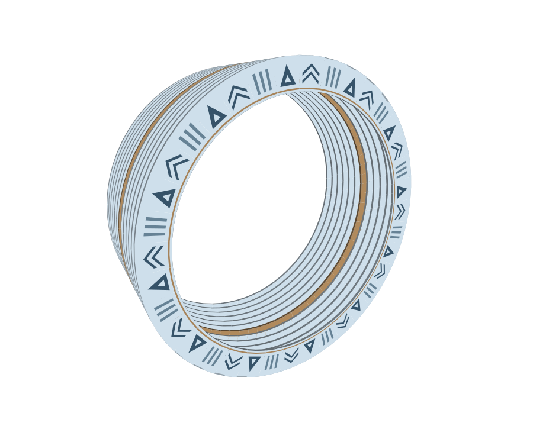
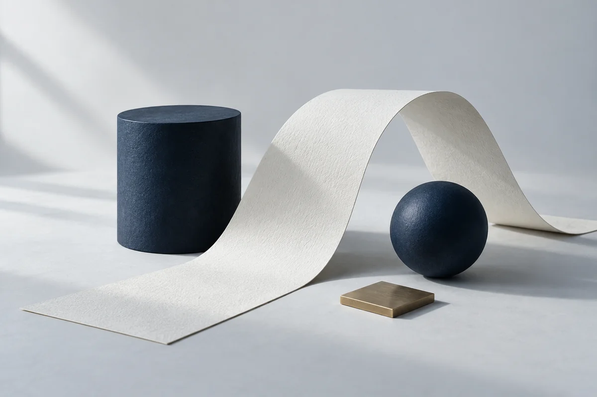

Webサイト
写真、言葉、情報の順番から、その場所らしさを組み立てる。見る人が知りたいことへ自然にたどり着けるWebサイトを制作します。
- 写真と言葉
- 情報の整理
- 伝わる導線


伝えたいことに、ふさわしい表現を。
日々の仕事に、使いやすい仕組みを。
Freedomは、見た目を整えることと、仕組みをつくることを、ひと続きのものとして考えます。お店の空気が伝わるWebサイトも、複雑な作業を整理するアプリも。使う人の目線から、必要なかたちを探していきます。
考え方と取り組み伝えることと、動かすこと。
二つの視点を行き来しながら。
写真、言葉、情報の順番から、その場所らしさを組み立てる。見る人が知りたいことへ自然にたどり着けるWebサイトを制作します。
注文や会計、取引の管理など、仕事の流れを画面へ。情報の整理から操作の設計、実装まで、一つの仕組みとしてつくります。
Selected works
Webサイトとアプリケーション、6つの自主制作。
すべての制作物を見る